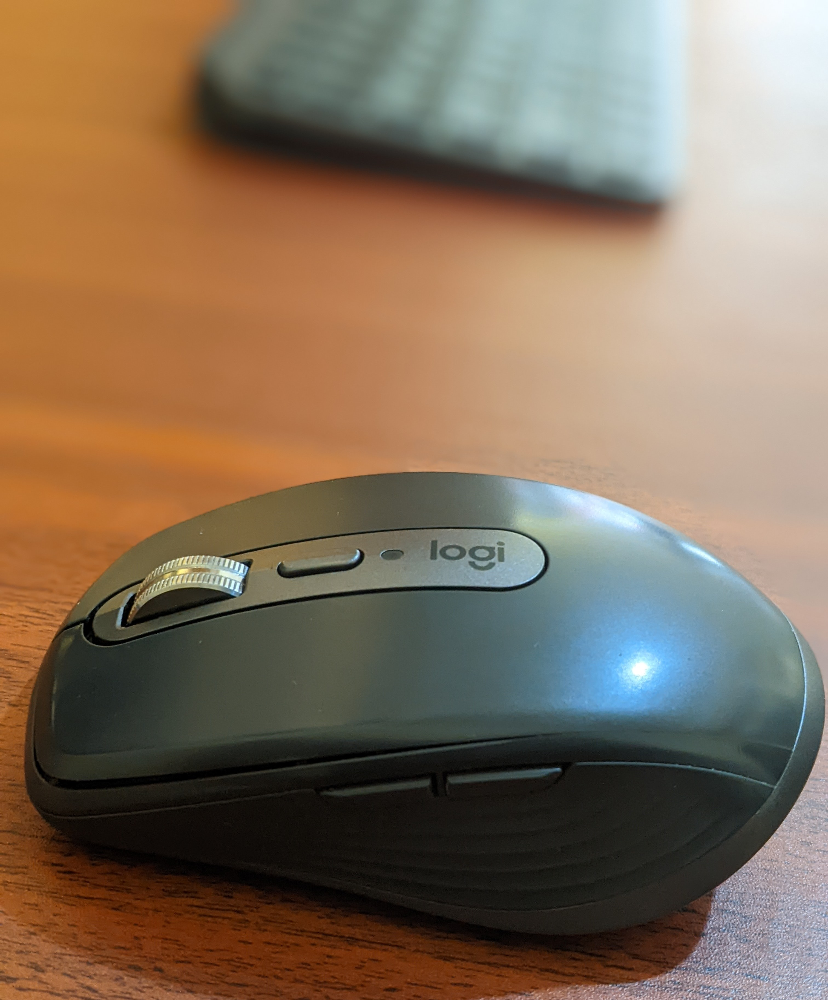
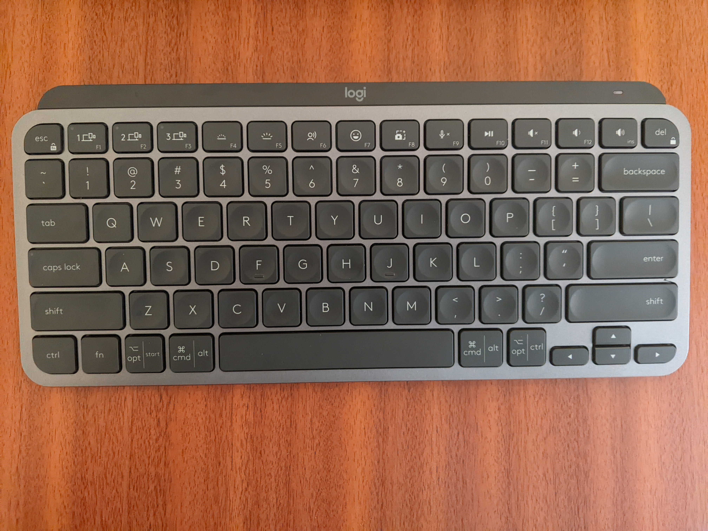
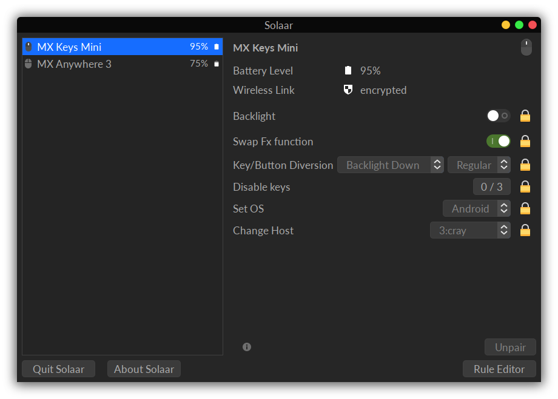
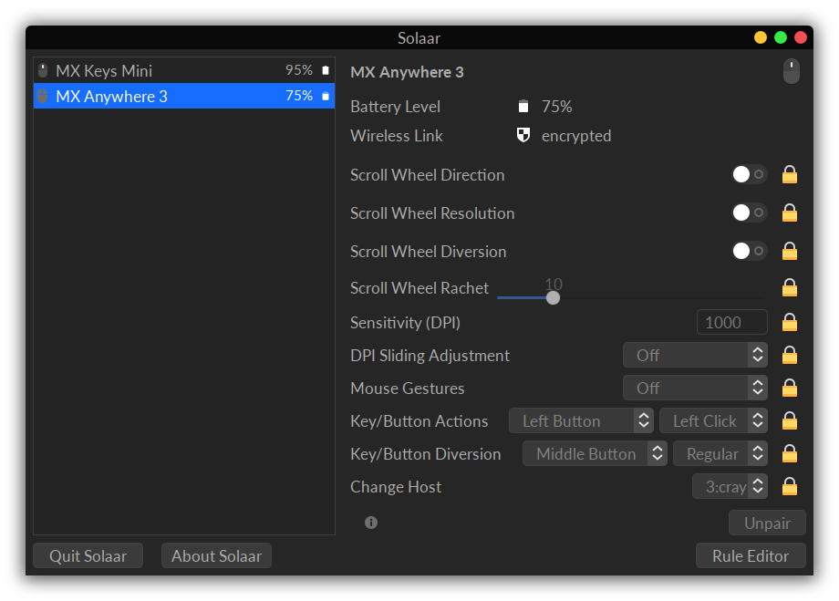

The Need
Since I have chosen a career in engineering(embedded systems engineering) and I’ll be seating a lot during my career, I have been thinking about ergonomics. As someone who has had questions about why I walk the way I do, the thought of aggravating my posture is not the most comforting. After a little reading, I learnt it is helpful to have your computer’s screen at your eye level so that you don’t look down or up while working. It is ideal that you look straight ahead which is understandable the more I think about it. In this light, I have been making purchases that would help me with a more ergonomic setup than I started with.
One of those purchases was a laptop stand. This lifts the laptop(which is where I do all my work) to a level close enough to my eye level so that I don’t have to look down. Even though that decision was helping to solve a problem, it created new ones. I could no longer use the built-in trackpad and keyboard on the laptop. I had to resort to external ones.
I started with an old HP mouse my workplace didn’t find useful any longer. I combined that with a DELL keyboard also from work. Both peripherals were wired. My current laptop has only two USB A ports. That meant if I had them connected, I couldn’t connect a USB cable to the development board I was using at the time. I eventually got a powered USB hub from Anker(I will likely write about it sometime). This fixed the ports issue but my tiny workspace felt more cluttered than even I could handle.
I decided to get a wireless mouse and keyboard combo. I did some reading and the Logitech MX series of peripherals jumped up at me. The problem was they were at pretty steep prices(at least for me). So, I decided I will get them in turn. I got the MX Anywhere 3 first.
MX ANYWHERE 3
The Logitech MX Anywhere 3 – this mouse is the little brother of Logitech’s MX Master 3 mouse. These things are nicely built and have assuring aesthetics. It has been 1 year and 5 months since I got my MX Anywhere 3. I’ll just go ahead and say it – it’s been a joy to have most of the time.
The mouse is a Bluetooth based mouse. The Bluetooth connection to my computer has been solid. While on Windows 10, I have never had any problems. The Logi Options software makes configuring the mouse on Windows a breeze.
It is possible to adjust the behaviour of the scroll wheel which has an electromagnetic mechanism. You can switch between using the scroll wheel in a ratchet manner or a more controlled precise scroll. In the ratchet mode, you can breeze through several lines of code,pdf documentation with just one flick of your index finger. It can be satisfying.
It comes with a USB C charging port in the front of the mouse. I personally think that is the right place to position the charging port.(Ahem, Apple I hope you’re watching; who am I kidding? You don’t care!).

Even though the Anywhere 3 looks small, I am comfortable with how it feels in my hands. I have not seen, talk less of used the Master 3 but I think it will be too big for my hand’s comfort. The small and portable nature of the Anywhere 3 is a plus for me since I carry it around in my bag.
One full charge takes about 70 days to fully discharge. When I got mine, I charged it to 100% on January 10,2021. The next time I thought about charging was on March 29,2021 only to find the battery was at 30%. How many days was that?
So far, my gripe with Logitech has been be the absence of the Logi Options and Options+ applications on Linux. Why isn’t there an official app from Logitech for the Linux ecosystem? I don’t understand and I am sure I won’t accept any explanation as a good enough reason(I’m kidding; I invite you to try).
I spend most of time in Fedora Linux. I use it for developing embedded applications, developing databases once in a while and most other computing tasks. I am sure you can understand why native Linux support for the MX series will be a nice feature for me.
Logitech needs to understand that there are professionals who use Linux too. Not all professionals use MacOS or Windows, some use Linux!
Once I did a kernel update that broke Bluetooth on my Linux setup.This caused me to have to pair the mouse after each reboot. It was a little annoying frankly. This was however, an issue with the kernel and not Logitech’s fault.After a few days, this got resolved upstream and another kernel update fixed it.
In terms of durability, my unit has not looked that different from when I first got it. There are a few micro-scratches on the 4 rubber feet on its underbelly and a little mark just above the scroll wheel. I think it will age well. When I need to move my workspace, I put my Anywhere 3 in a cute case a friend gave to me.
Overall, I think this purchase has been a good investment even though it was a steep one.
After about 1 year and 5 months I finally got the Logitech MX Keys Mini to complement the MX Anywhere 3 for my desk setup.
MX KEYS MINI
The wired DELL keyboard I was using was humongous and took a lot of space on my small table. I also had to put up with its USB cable. Well, say good bye to all those; I just got my MX Keys Mini baby!
I got my Keys Mini in the gray color to match the MX ANywhere 3. I got it in the American layout(ANSI) style. I think that is how QWERTY keyboards should be laid out.(Sorry to offend the folks in the UK. It’s also weird that the UK layout is the ISO standard. What? )
Another aesthetical master piece from Logitech, the MX Keys Mini is a sight for sore eyes.

But just to be looking at it is not why I got it, right?
After typing on it for a few minutes on the first day, I thought it was a little too mini than my mental model of mini. At work, I think the chair height to table height ratio required me to raise the keyboard a little more than the non-adjustable feet will provide. I think it requires some getting used to.
After three days of working with it however, not only did I start getting comfortable with it, I could use it without the height adjustment I made by putting a little breadboard underneath the front feet.
I am also enjoying those slight grooves on the keys. There are somethings you wouldn’t think you liked until you tried them out. This is certainly one of those. I am getting used to it by each key-press.
In order to make this keyboard this small without sacrificing ergonomics too much, Logitech got rid of the PAGE UP,PAGE DOWN,HOME and END keys. These functionalities can however be invoked by pressing the FN key together with the ARROW keys. I haven’t missed those too much although my muscles need to build that new key sequence into their memory.
The numpad is also visibly missing. This is a choice I like and agree with. I don’t use them frequently.The ARROW keys are in the inverted T configuration. I am not sure if I like it that way but I’ll see how I feel about them after spending longer time with the keyboard. I should note however that I do not intend to use it for any gaming whatsoever.I am not a gamer anyway!
Given the build of this keyboard, I expect it to age pretty well. I got a carrying case to protect it when on the move.
It has been 3 days since I got my hands on this keyboard and I am loving it. This article is being written on this MX Keys Mini flanked to the right by my MX Anywhere 3.
Just like the Anywhere 3, the Keys Mini doesn’t have the Logi Options app available to it in the Linux ecosystem.
I reckon this was a great investment too.
Piper and more importantly Solaar
After combing the web a little while attempting to find software to control the Anywhere 3 on Linux, I came across Piper. Piper helps tweak the functions of the buttons on the mouse. That’s all it does however. And it doesn’t handle keyboards as far as I know. Enter Solaar!
It is a wonder that it took me 1 year and 5 months to come across Solaar.
Solaar kinda puts to bed all my complaints about Logitech and their seeming blatant disregard for their Linux-user customer base.
Solaar allows you to tweak the settings of most Logitech Keyboards and Mice. You can check them out here if you need a tool like that.
The following screenshot shows the Solaar interface while I was tweaking the Keys Mini’s settings.

The important thing here is I had to select the Android OS for this keyboard to behave the way I wanted it to.
I have not gotten the emoji keys to work yet in Linux. If I do, all my code comments and articles will be littered with emojis. If you have the unfortunate pleasure of seeing any of those, just know that I finally got it to work.

With Solaar, one of my issues with the absence of Logi Options on Linux is catered for.
The other really cool feature of the MX series which is Logi Flow is not available on Linux as far as I am aware.
Chris Woodall did point me to Barrier in the Embedded Podcast Slack group. I have not tried it out yet.
I am glad I finally got around to writing this brain dump of a review.
I will improve my writing skills with more practice so, expect to see more of this.
PermaLink:
https://raynayx.com/2022/07/13/logi-mx-review/